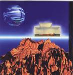

Home Artist links Label link

| Artist: | Manning |
| Title: | The Cure |
| Label: | Cyclops CYCL 082 |
| Length(s): | 64 minutes |
| Year(s) of release: | 2000 |
| Month of review: | 09/2000 |
Line up
Guy Manning - guitars, keyboards, vocals, bass, mandolin, drums, percussion
Andy Tillison-Diskdrive - additional keyboards, drums
Jonathan Barrett - the bass
Simon Baskind - drums, percussion
Laura Fowles - sax
Ian Tothill - violin
Iain Fairbairn - violin
Soundscapes by Dan and Julie Lyons and Guy Manning
Tracks
{Syndrome}
| 1) | Domicile | 10.18
|
| {Therapy}
|
| 2) | Real Life | 3.59
|
| 3) | A Strange Place | 6.48
|
| 4) | Whispers On The Wire | 7.33
|
| 5) | Songs Of Faith | 11.44
|
| 6) | Falling | 6.38
|
| {Prognosis}
|
| 7) | The Cure | 17.34
|
Summary
Used to be called Guy Manning, but now for some reason under the name of
Manning, still on the Cyclops label.
The music
The previous record yielded a combination of folky singersongwriter music
and symphonic rock. On this album the balance is quite a bit more to the
symphonic rock side with extensive tracks such the opener Domicile.
Softly brimming organs, a humming singer, orchestral voices and effective
percussion make for an opening that has both good atmosphere as well as
being interesting musically with some catchy themes. Manning's own
sharp guitar playing leads up to the vocal part. Manning has a very pleasant
melodic voice, very English, somewhat in the style of guys like Roy Harper and
yes also with a tinge of Ian Anderson. A very distinctive voice.
In the middle we have an organ solo that might remind some of that related
band Parallel Or 90 Degrees (some people, like myself, thought that he
had become in fact a member of said band, but that is not that case) followed
by hammering piano solo. In some places the drums sound a bit mechanic,
so it might be that not all drumming is live. On the whole a very "electronic"
sounding rock track compared to the songs on the predecessor.
The second part of the album consists of five tracks, of which Real Life
is the first and shortest. Compared to the first track it is an oasis
of peace and quiet, with soft vocals, subtle keyboard playing and some cosmic
sounds in the back. A bit of a lullabye. A Strange Place is next up and this
is different once again. The music is mid-tempo, a bit bouncy with some folky
leanings with prominent basswork and a focus on the vocal part, which is
melodic, clear and somewhat loud. Orchestral keyboards in the middle of this
one, take this impression away again. The song ends with waves upon a shore
and some sampled voices in world music style (including church music).
Whispers On The Wire is one of the most distinctive tracks, because of
the repeated Click Click, which has a Genesis sound in the organ work. It's not
just the Click Click, but the vocal melody accompanying sticks easily to
one's mind. The final part of the track features some meandering guitar
soloing and some groovy organ playing. Most notably however are the
very sharp keyboards, slightly before. Made my ears ring. We are not the
end right then, because the music falls away almost entirely then but the
song hasn't finished. Like in the previous track it is time for some
experimental sounds on a metronome ticking and later on the violins join in.
This part refer mostly to contemporary film music (but when the rest falls
awat I'm reminded of Hammills Fall Of The House Of Usher), something
encountered more and more in progressive rock these days. Songs Of Faith is
with over eleven minutes the next major track. Astronaut time on this track,
and we open with spoken voices introducing the story of the astronaut in
trouble. The vocals of Manning are very sad here, giving me goosebumps.
A melancholy track. After some relaxed piano and violin take over we come
to the part of the patient and the click click returns with some more
symphonic arrangements such as loud keyboards and a wailing guitar solo.
The song ends quietly with a softly crying bass. A very good track.
Falling is the penultimate track and it opens a bit mellowly. Later on
the violin and the sax come back in. Another reference I might mention here
(and it holds quite generally for the music of Guy Manning) is Strawbs in
their more definitely progressive time. In a way Mannings voice is as
distinctive as that of David Cousins.
The final track The Cure is by far the longest. Opening slowly with keyboards
the first part is called Dawn. We move then into an organ dominated part
with some cutting guitar work in between and some sax as well.
In Hello Dr. Strange I'm reminded of Supertramp in their old days (the vocals
of the Doctor). A Dream and whatever comes after is quite spacey, but
continuing the orchestral sound. People might be reminded a bit of Tangerine
Dream here. Some of the samples here are downright hard on the ears (the
bees for instance). From then on the music starts to wind down with some
Hackettish guitar work, acoustic guitars in the accompaniment and cosmic
keyboards in the back. After a bang the Epilogue closes it all down.
Conclusion
I like this concept album. It is not great, but certainly worth your attention.
In some cases I think the sound is a bit too cold (those drums again, some
of the percussion sounds warmer) and sometimes the music could be a bit more
concise. The vocals I really like a lot, Manning has a flexible, interesting
voice. Compared to the previous album the music is more varied, more "prog"
and there are some memorable melodies on here (Whisper On The Wire). In some
cases the performance gives the music something extra (goosebumps in the
opening of Songs Of Faith). At first this album seems louder and less
singersongwriter directed as the previous album, but the album does have its
share of quieter moments (Falling, Real Life), but in a way there are always aspects that make the track sound less ordinary. In
many places a more orchestral approach is taken (The Cure).
© Jurriaan Hage